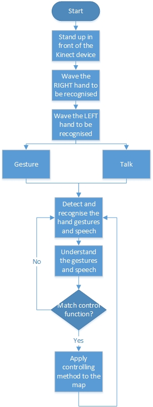

This system is a multi-modal application. This application allows the users to control the map components by Gesture and Speech with the help of Keyboard and Mouse. To use this application you need Kinect device to detect user gestures, a microphone to detect use speech and an internet connection.
fkdfksd
